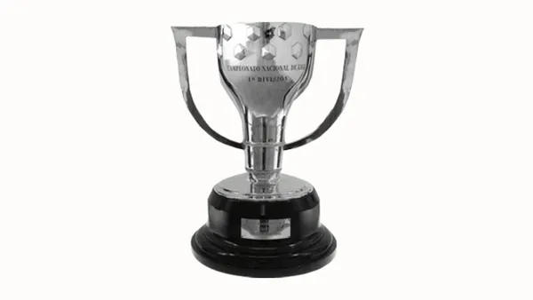
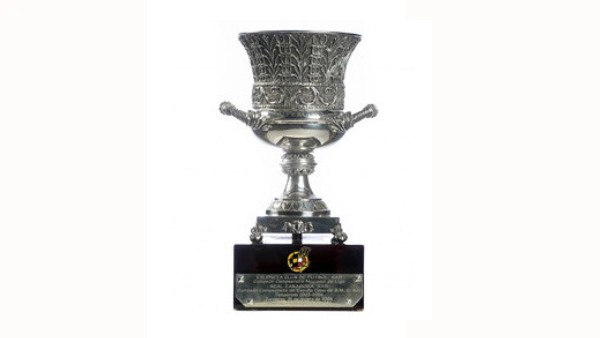
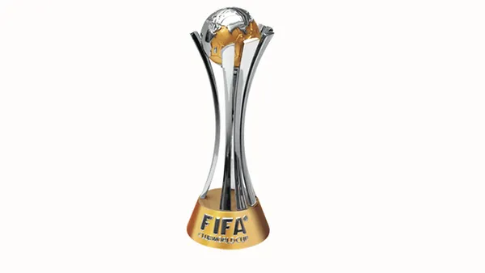
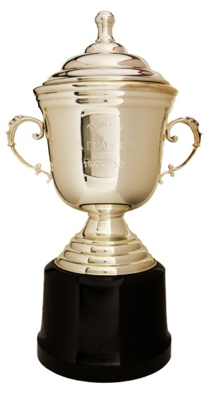
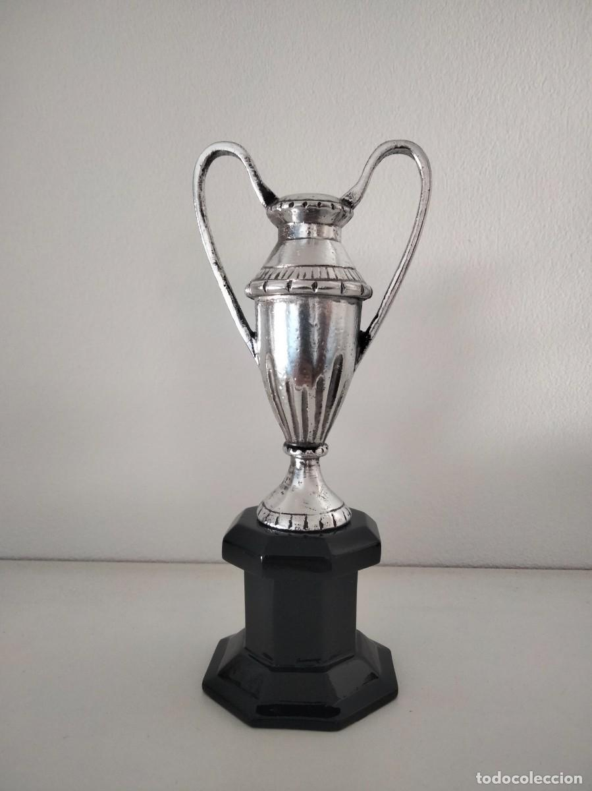
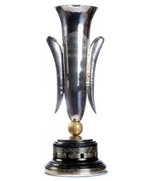

Liga - 28
1928-29, 1944-45, 1947-48, 1948-49, 1951-52, 1952-53, 1958-59, 1959-60, 1973-74, 1984-85, 1990-91, 1991-92, 1992-93, 1993-94, 1997-98, 1998-99, 2004-05, 2005-06, 2008-09, 2009-10, 2010-11, 2012-13, 2014-15, 2015-16, 2017-18, 2018-19, 2022-23, 2024-25

Champions League - 5
1991-92, 2005-06, 2008-09, 2010-11, 2014-15

Copa del Rey - 32
1909-10, 1911-12, 1912-13, 1919-20, 1921-22, 1924-25, 1925-26, 1927-28, 1941-42, 1950-51, 1951-52, 1952-53, 1956-57, 1958-59, 1962-63, 1967-68, 1970-71, 1977-78, 1980-81, 1982-83, 1987-88, 1989-90, 1996-97, 1997-98, 2008-09, 2011-12, 2014-15, 2015-16, 2016-17, 2017-18, 2020-21, 2024-25

Supercopa de España - 15
1983-84, 1991-92, 1992-93, 1994-95, 1996-97, 2005-06, 2006-07, 2009-10, 2010-11, 2011-12, 2013-14, 2016-17, 2018-19, 2022-23, 2024-25

Supercopa de Europa - 5
1992-93, 1997-98, 2009-10, 2011-12, 2015-16

Mundial de Clubs - 3
2009-10, 2011-12, 2015-16

Copa Eva Duarte - 3
1948, 1952, 1953

Copa de la Liga - 2
1982-83, 1985-86
Recopa de Europa - 4
1978-79, 1981-82, 1988-89, 1996-97

Copa de Ferias - 3
1957-58, 1959-60, 1965-66